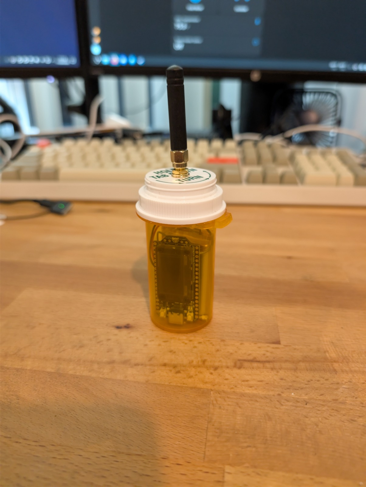
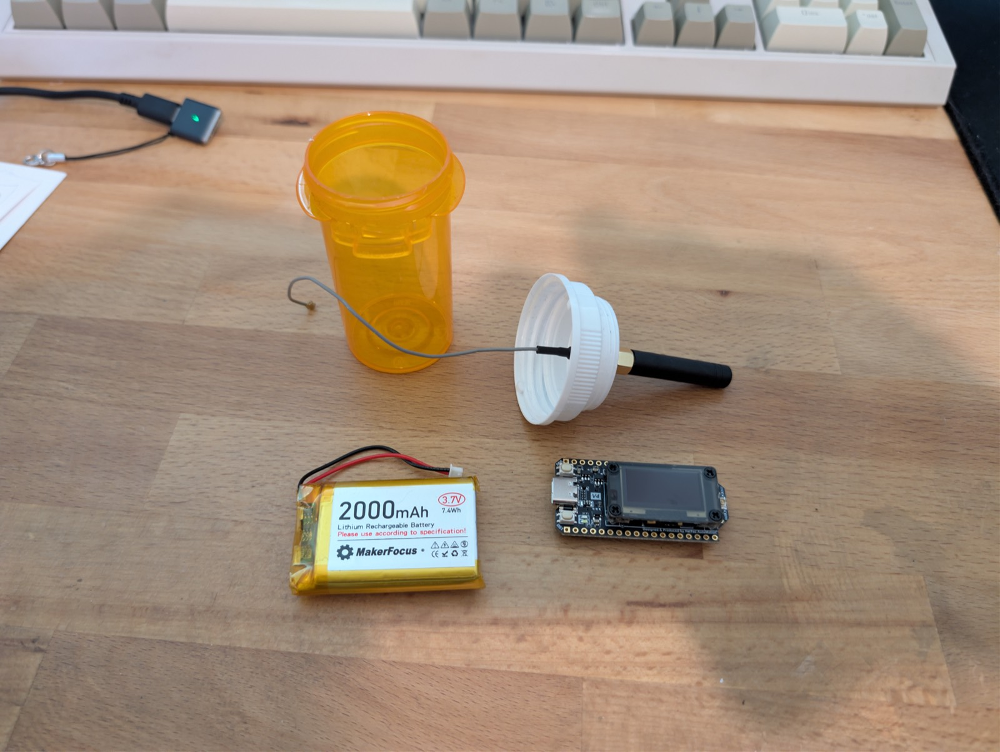
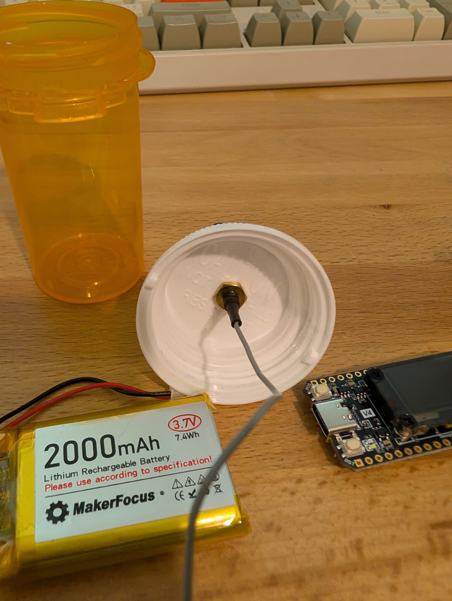

Pillpeater
A Heltec V4 and a 2000 mAh battery in a pharmacy pill bottle, with the antenna mounted through the cap. Small enough to throw in a bag and set up anywhere as a temporary repeater.

What it is
The Pillpeater is a Heltec V4 and a MakerFocus 2000 mAh LiPo battery packed into an empty pharmacy pill bottle. The V4's stock antenna is mounted through a hole in the cap, so it stands straight up when the bottle is upright.
It's a sibling of the Icepeter, but smaller and with a stronger radio: the V4 transmits at up to 28 dBm, compared with 21 dBm on the V3. Set it on a windowsill, a fence post or the roof of a car to fill a gap, then bring it home to recharge.
| Processor | ESP32-S3 on the Heltec V4 (Wi-Fi and Bluetooth LE 5.0) |
|---|---|
| Radio | Semtech SX1262 LoRa with a power amplifier, up to 28 dBm, 902-928 MHz (US) |
| Antenna | The antenna that comes with the V4, mounted through the cap |
| Battery | MakerFocus 2000 mAh LiPo, charged over the V4's USB-C port |
| Case | An empty pharmacy pill bottle |
| Weatherproofing | The cap keeps out light rain, but it isn't sealed |
| Firmware | MeshCore, Meshtastic |
Role in the mesh
Temporary repeater
What it's built for. Bring it to an event, a hike or an emergency and set it somewhere high to fill a coverage gap. It runs until the battery is empty, so charge it fully before you go.
Companion
It's small enough to carry and pairs with your phone like any V4. Expect to charge it often, though: the ESP32 and the V4's stronger radio drain a 2000 mAh battery quickly.
Permanent repeater
With no solar and a small battery, it'll need to come down to recharge. For one that stays up, see the Basic Repeater or RAK 1W Repeater.
Where to buy and what it costs
There's no kit for this build. Everything comes from the parts list below, plus an empty pill bottle. Make sure the Heltec V4 is the 915 MHz version.
The build
The board and battery sit inside the bottle, and the antenna is mounted through the cap. Pick a bottle wide enough for the V4 and battery to slide in.
Bill of materials
| Part | Qty | Notes | Approx. cost |
|---|---|---|---|
| Heltec V4, 915 MHz | 1 | Comes with the antenna used here. See the Heltec V4 page for where to buy | See V4 page |
| MakerFocus 2000 mAh LiPo battery | 1 | Check the plug and polarity match the V4's battery connector | $10 |
| Pharmacy pill bottle | 1 | Empty and clean, wide enough for the V4 | Free |
| Total | $10 + Heltec V4 | ||
Prices last checked November 2026.
Assembly notes
- Flash the firmware first (see Setup below).
- Drill a hole in the center of the cap and mount the antenna connector through it.
- Connect the antenna cable to the V4. Never power the radio without an antenna attached.
- Check the battery's polarity and plug it into the V4.
- Slide the board and battery into the bottle and snap the cap on.
Photos


Setup
Flash the firmware from a web browser (Chrome or Edge) with the Heltec V4 plugged in over USB-C, and follow our recommended settings. In the flasher, pick Heltec V4 or Heltec V4-R8 to match your board. To make the battery last, turn off Wi-Fi and the screen once it's set up.
- MeshCore: MeshCore web flasher, then see MeshCore repeater settings.
- Meshtastic: Meshtastic web flasher, then see Meshtastic infrastructure settings.